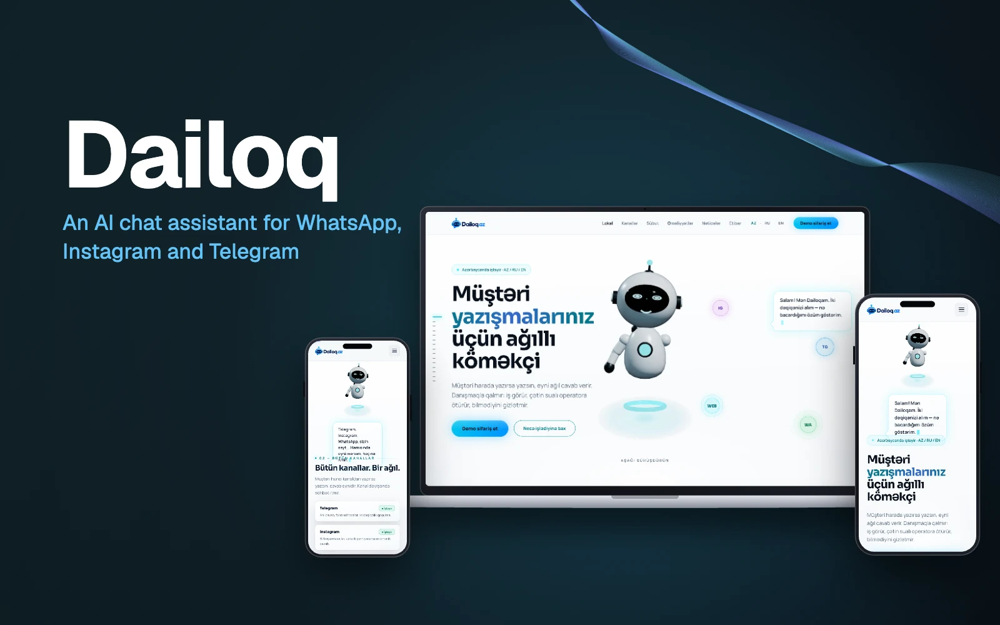

01 / ИИ-платформы
Dailoq — ИИ-ассистент для переписки с клиентами в Азербайджане
Один ассистент в Telegram, Instagram, WhatsApp и на сайте — отвечает по вашим документам, выполняет действия и передаёт сложные вопросы человеку.

- 4канала — Telegram, Instagram, WhatsApp, сайт
- ~98%ответов верные
- 15+компаний пользуются
01 / Обзор
Dailoq — ИИ-ассистент для переписки с клиентами, созданный для бизнеса в Азербайджане. В каком бы канале ни написал клиент — Telegram, Instagram, WhatsApp или виджет на сайте, — отвечает один и тот же ассистент на азербайджанском, русском или английском. Он работает по документам компании, выполняет простые задачи вроде бронирования столика и передаёт сложные разговоры оператору вместе с кратким резюме.
02 / Задача
Малый и средний бизнес вручную отвечает на одни и те же вопросы в нескольких мессенджерах — часто в нерабочее время и на смеси азербайджанского и русского. Глобальные чат-бот платформы не понимают местные диалекты, замену букв и смешанные сообщения, выставляют цены в иностранной валюте и склонны выдумывать ответ, когда не знают его.
03 / Наш подход
Мы строили ассистента, начиная с местного языка: азербайджанский — с диалектными выражениями, заменой букв и смешанными AZ–RU фразами — тестируется отдельно. Ответы берутся из файлов клиента, и у каждого указан источник; если ассистент не может что-то подтвердить, он прямо говорит об этом и предлагает подключить человека. Любое изменение в «мозге» бота должно пройти набор тестовых вопросов, прежде чем дойдёт до клиентов.
04 / Результат
Dailoq пользуются более 15 компаний. Они получают одного ассистента для всех каналов: он отвечает по документам компании — около 98% ответов верны, ошибок не более 2%, — понимает голосовые сообщения и фото, бронирует и подтверждает действия и передаёт разговор оператору с полным контекстом; всё управляется из одной панели без кода, с историей переписки и ежемесячными отчётами.
05 / Ключевые функции
Что умеет продукт.
- 01
Один мозг — все каналы
Работают Telegram, Instagram, WhatsApp и веб-виджет, каналы Meta — через официальную интеграцию Meta. Разговор продолжается, даже если клиент сменил канал.
- 02
Родной азербайджанский
Понимает диалект, замену букв и смешанные AZ–RU–EN сообщения и отвечает на языке клиента.
- 03
Ответы с источником
Ищет по смыслу в PDF, DOCX, XLSX, TXT, Markdown, ссылках и FAQ; под каждым ответом указан файл-источник, а вопросы без ответа одним кликом превращаются в FAQ.
- 04
Голос и изображения
Одна и та же мультимодальная модель понимает голосовые сообщения и фото — например, меню — и отвечает по ним, без отдельного шага OCR.
- 05
Выполняет действия
Сначала запрашивает подтверждение, затем бронирует столик или обращается к системе клиента через REST-коннектор — с ключом идемпотентности, чтобы ничего не выполнилось дважды.
- 06
Передача человеку и панель
Сложные вопросы уходят оператору с кратким резюме; владелец управляет тоном, знаниями, каналами, ролями команды и историей в одной панели без кода.
06 / Архитектура
Как это устроено.
Тестовый барьер
Растущий набор реальных вопросов — около половины на азербайджанском, 30% на русском, 20% на английском — прогоняется при каждом изменении; если результат падает, релиз блокируется.
Изоляция клиентов
Ролевой доступ и изоляция на уровне базы данных разделяют данные клиентов; ключи подключений хранятся в зашифрованном виде, а неизменяемый журнал фиксирует каждое действие. Продакшен работает на сервере Contabo в Европе за Cloudflare.
Маршрутизация моделей
Адаптеры для нескольких ИИ-моделей и слой маршрутизации, который выбирает модель под каждый запрос, — смена поставщика сводится к настройке, а не к переписыванию. Векторы строит собственная модель bge-m3 на нашем сервере, а семантический поиск работает внутри PostgreSQL на pgvector.
07 / Технологии
Технологический стек.
- Бэкенд
- C#
- ASP.NET Core 8 (.NET 8)
- Фронтенд
- Next.js (App Router)
- React
- WebGL 3D-маскот (GLB)
- Данные
- PostgreSQL 16
- pgvector
- Redis (кэш и очереди)
- ИИ
- Адаптеры нескольких моделей с выбором под запрос
- Мультимодальная модель для голоса и изображений
- Векторы bge-m3 (на своём сервере)
- Семантический поиск / RAG
- Каналы
- WhatsApp и Instagram (Meta)
- Telegram Bot API
- Веб-виджет (13 КБ, потоковый ответ)
- Инфраструктура
- Contabo (Европа)
- Cloudflare
- Безопасность
- Изоляция клиентов (multi-tenant)
- Ролевой доступ
- Шифрование ключей
- Журнал аудита